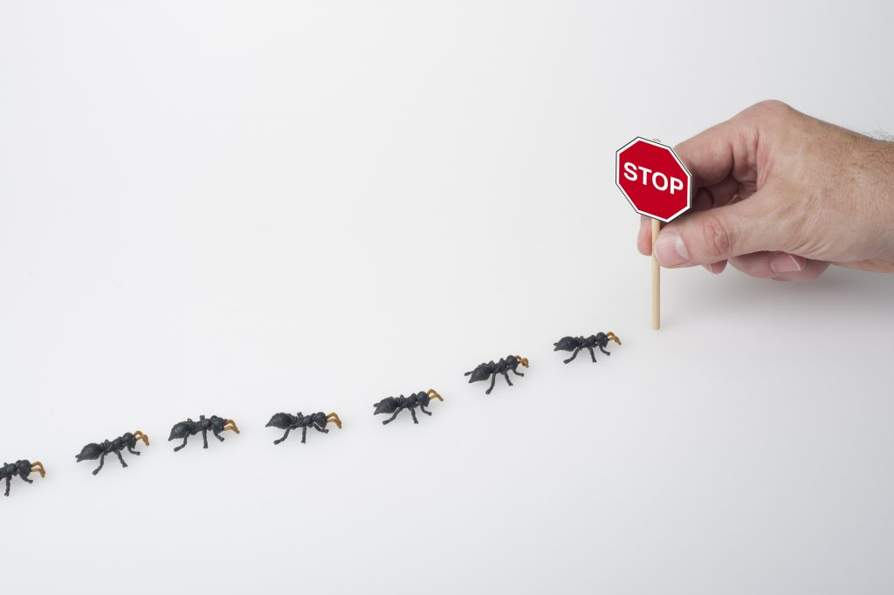

Keep Ants Out!
A guide to keep ants out of your home


How to Prevent an infestation
Preventing an ant infestation in your home means taking proactive measures to eliminate possible entry points and attractants for ants. Some simple steps that can be taken include sealing any cracks in the walls of your house. Ants’ small size allows them to get into your house through tiny cracks in the wall, so it is important to seal them. This would usually mean using caulk to make a clean seal that ants cannot get through.
There are also natural ant deterrents that can keep ants from trying to enter your home in the first place. Things like cinnamon, lemon juice, or peppermint oil can be used as a natural ant repellent. You simply place these items near any ant trails or entry points near your home. The easiest way to place these repellents is to take a small cup, such as a solo cup, and fill it with a small amount of the substance. The ants are repelled by the smell and just keeping a small amount of these substances near potential ant entry points can keep ants from entering your home in the first place.